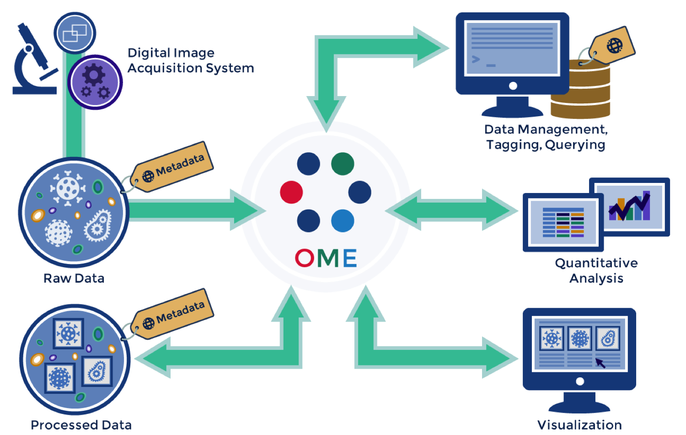
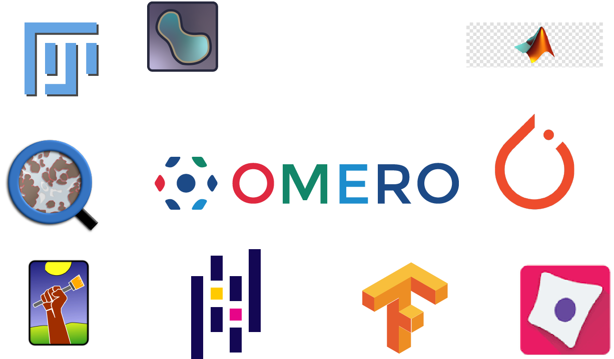
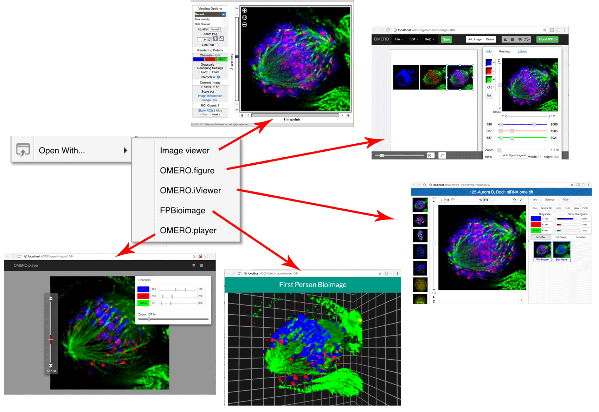
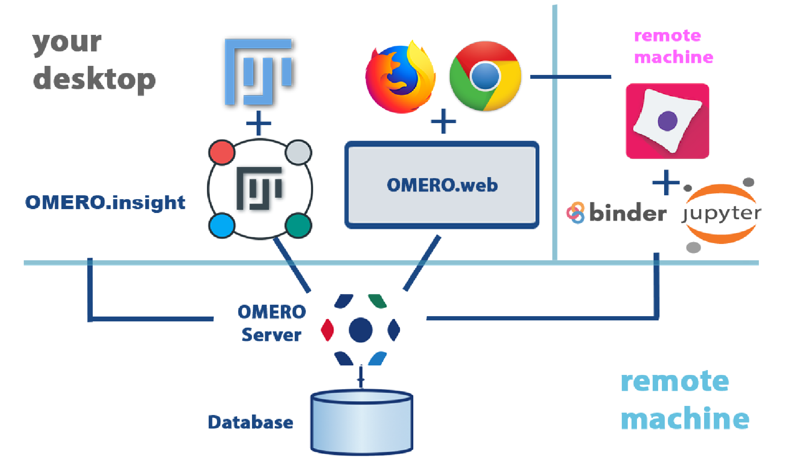
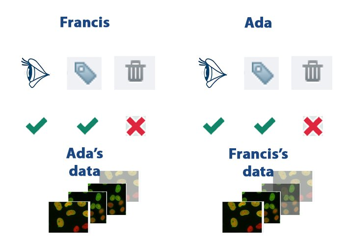

OMERO Workshop
KAUST Users
September 2022
Imaging & Characterization
Core Lab
Optical Team
Outline
- What is OME?
- What is OMERO?
- Workshop overview
OME: Interoperability
OMERO is a server with clients
Image Data - Read by Bio-Formats
- Support for reading > 150 image formats
- Read pixel data and metadata
- Includes 5D images, HCS data, Tiled WSI images
- Domains: biological, medical, general
Metadata
- Stored in a Relational Database
- Acquisition Metadata
- User-added Annotations
- ROIs / Segmentations
Search
- Text and Annotations indexed!
- Allows rapid! keyword searches
OMERO.tables
- HDF5 tables for analytical results
- Allows derived results to be attached
to their parent data - Flexible columns
OMERO API
Python | Java | Matlab | R | C++
Integration
Open with... Web apps
Today's workshop
Each other's data – read-annotate setup
Thank you